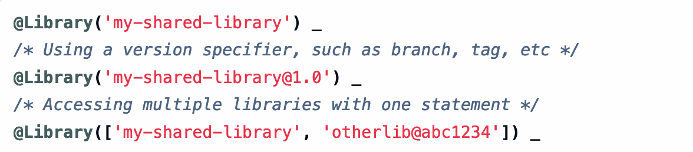

Partie 5 : Utilisation de Plugins et Bibliothèques Partagées dans Jenkins
Objectifs
Dans cette partie, vous allez :
- Comprendre l’importance des plugins dans Jenkins et installer les plugins essentiels pour les pipelines CI/CD.
- Découvrir les bibliothèques partagées pour créer des pipelines réutilisables et modulaires.
5.1 Installation et gestion des plugins
Introduction aux plugins et leur utilité
Les plugins Jenkins permettent d’étendre les fonctionnalités de base en ajoutant des outils et des intégrations indispensables aux pipelines CI/CD. Ils permettent, entre autres :
- D’intégrer des outils externes (comme Git, Docker) dans Jenkins.
- D’améliorer l’interface utilisateur avec des options de visualisation, comme le plugin Blue Ocean.
- D’automatiser des tâches pour accélérer les workflows et ajouter des fonctionnalités avancées (par exemple, intégration de Slack pour les notifications).
Installation des plugins essentiels pour CI/CD
- Accéder à la gestion des plugins : Allez dans Manage Jenkins > Manage Plugins.
- Plugins recommandés :
- Git Plugin : Intègre les dépôts Git dans les pipelines Jenkins.
- Pipeline Plugin : Permet de créer des pipelines en tant que code dans un Jenkinsfile.
- Docker Pipeline : Intègre Docker dans Jenkins pour exécuter des étapes du pipeline dans des conteneurs.
- Blue Ocean : Fournit une interface utilisateur moderne pour visualiser et suivre les pipelines.
- Credentials Binding Plugin : Gère et utilise en sécurité les informations d’identification.
5.2 Création et utilisation de bibliothèques partagées
Qu’est-ce qu’une bibliothèque partagée ?
Une bibliothèque partagée est un ensemble de scripts et de fonctions centralisés que vous pouvez réutiliser dans différents pipelines Jenkins, réduisant ainsi la redondance et facilitant la maintenance. Les bibliothèques partagées permettent :
- D’organiser des étapes courantes (ex. : vérification de code, configuration d’environnement).
- De créer des pipelines modulaires en encapsulant des étapes récurrentes.
Structuration d'une bibliothèque partagée
- Créer un dépôt Git pour la bibliothèque : Définissez un dépôt Git pour stocker le code de la bibliothèque partagée.
- Organisation des dossiers dans la bibliothèque :
- vars/ : Contient des scripts Groovy de fonctions réutilisables.
- src/ : Contient des classes Groovy organisées en packages.
- resources/ : Contient des fichiers de configuration statiques.
Exemple de structure de répertoire :
my-shared-library/
├── vars/
│ └── helloWorld.groovy
├── src/
│ └── org/
│ └── example/
│ └── utils/
│ └── Helper.groovy
└── resources/
└── config/
└── default-config.yaml
Exemple de script dans vars/helloWorld.groovy :
def call(String name = 'World') {
echo "Hello, ${name}!"
}

Source: https://www.jenkins.io/doc/book/pipeline/shared-libraries/
Utiliser une bibliothèque partagée dans un Jenkinsfile
-
Déclarer la bibliothèque partagée :
- Allez dans Manage Jenkins > Configure System et ajoutez la bibliothèque partagée dans Global Pipeline Libraries en spécifiant son nom et le dépôt Git associé.
-
Appeler des fonctions de la bibliothèque dans un Jenkinsfile :
- Dans un Jenkinsfile, utilisez l’annotation @Library pour importer la bibliothèque.
Exemple de Jenkinsfile utilisant une bibliothèque partagée :
@Library('my-shared-library') _
pipeline {
agent any
stages {
stage('Greeting') {
steps {
helloWorld('Jenkins User') // Appel de la fonction définie dans vars/helloWorld.groovy
}
}
stage('Build') {
steps {
echo 'Building the project...'
// Autres étapes de build
}
}
}
}
Exercice : Installer le plugin Git et configurer un pipeline pour cloner et exécuter un projet GitHub
Objectif de l'exercice : Installer le plugin Git, puis configurer un pipeline Jenkins pour cloner un projet depuis GitHub et exécuter une commande sur le code récupéré.
Étapes de l’exercice :
-
Installer le plugin Git :
- Accédez à Manage Jenkins > Manage Plugins > Available et recherchez Git Plugin.
- Installez le plugin et redémarrez Jenkins si nécessaire.
-
Créer un nouveau job Pipeline :
- Depuis le tableau de bord Jenkins, créez un job de type Pipeline et nommez-le (par exemple, "GitHub Clone and Build").
-
Configurer le Jenkinsfile pour cloner un dépôt GitHub :
- Dans le dépôt Git associé au job, créez un fichier nommé
Jenkinsfile. - Ajoutez le code suivant au Jenkinsfile pour cloner un projet et exécuter un build.
pipeline { agent any stages { stage('Clone Repository') { steps { // Remplacez 'https://github.com/username/repository.git' par l’URL de votre dépôt git 'https://github.com/username/repository.git' } } stage('Build') { steps { echo 'Building the project...' // Ajoutez ici la commande pour compiler ou exécuter le projet, ex. : sh 'make build' } } } } - Dans le dépôt Git associé au job, créez un fichier nommé
-
Exécuter le pipeline :
- Allez dans votre job Jenkins et cliquez sur Build Now pour exécuter le pipeline.
- Surveillez les logs pour vérifier que le dépôt a été cloné et que la commande de build s’est exécutée.
Liens vers la documentation
Questions de Révision
Questions de Révision
Pourquoi utiliser des plugins dans Jenkins ?
Solution
Les plugins permettent d’étendre les fonctionnalités de Jenkins en intégrant des outils tiers (ex. : Git, Docker) et en ajoutant des fonctionnalités spécifiques pour les pipelines CI/CD.Quels sont les plugins essentiels pour les pipelines CI/CD ?
Solution
Les plugins essentiels incluent le **Git Plugin** pour le contrôle de version, le **Pipeline Plugin** pour la gestion des pipelines, le **Docker Pipeline** pour l’intégration de Docker, et **Blue Ocean** pour la visualisation.Comment déclarer une bibliothèque partagée dans Jenkins ?
Solution
Déclarez la bibliothèque partagée dans **Manage Jenkins > Configure System > Global Pipeline Libraries**, en précisant son nom et le dépôt Git associé.Pourquoi utiliser des bibliothèques partagées dans Jenkins ?
Solution
Les bibliothèques partagées permettent de centraliser et réutiliser du code dans plusieurs pipelines, réduisant ainsi la duplication de code et facilitant la maintenance.Conseils Pratiques
- Planifiez les mises à jour de plugins régulièrement pour bénéficier des améliorations de sécurité et de performance.
- Utilisez des bibliothèques partagées pour standardiser les étapes fréquentes des pipelines et faciliter leur maintenance.
- Sauvegardez votre configuration Jenkins (y compris les plugins) pour assurer une reprise rapide en cas de problème. Documentation sur les sauvegardes Jenkins
Défi Intermédiaire
Défi Intermédiaire
**Objectif** : Configurer un pipeline Jenkins pour utiliser une bibliothèque partagée et un plugin de notification.
Contexte : Vous avez un pipeline complexe nécessitant des étapes standardisées de vérification de code et de tests, que vous souhaitez appeler depuis une bibliothèque partagée. Ajoutez également une étape de notification en fin de pipeline.
Étapes principales
1. Créez une bibliothèque partagée avec une fonction `codeQualityCheck` dans le dossier `vars`. 2. Déclarez la bibliothèque dans Jenkins, sous **Global Pipeline Libraries**. 3. Configurez un pipeline pour exécuter la fonction `codeQualityCheck` et utilisez un plugin de notification (Slack ou email) pour notifier en fin de pipeline.Compétences renforcées :
- Gestion des bibliothèques partagées
- Utilisation de plugins de notification